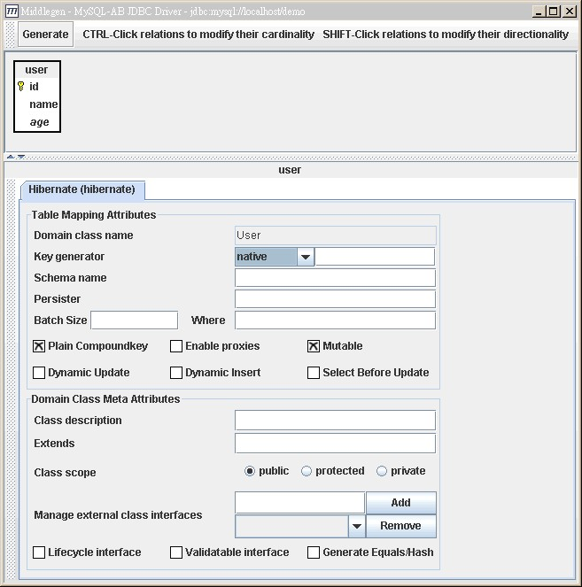
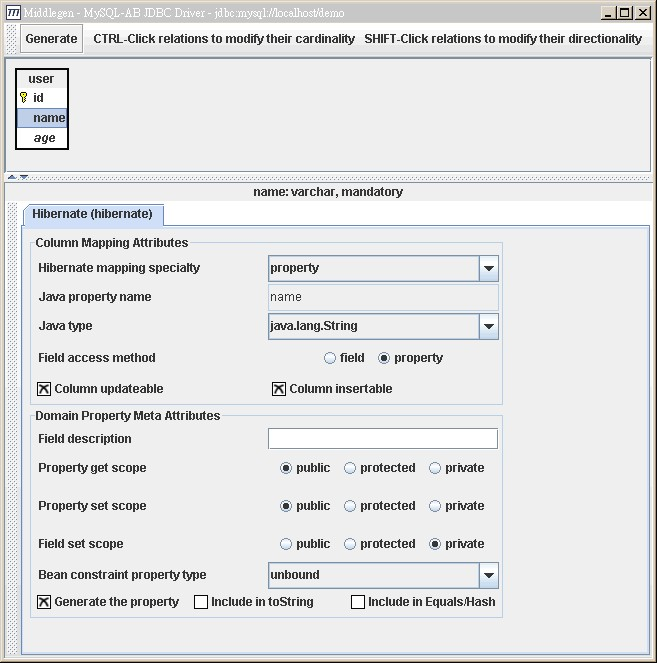

可以从数据库的表格自动生成映像文件，首先
下载 Middlegen-Hibernate ，下载后将之解压缩。
这边所使用的数据库是MySQL，并假设您的数据库中已有以下的表格：
CREATE TABLE user (
id INT(11) NOT NULL auto_increment PRIMARY KEY,
name VARCHAR(100) NOT NULL default '',
age INT
);
进入Middlegen-Hibernate解压缩后的config/database目录中，开启mysql.xml，修改当中的数据库配置相关讯息：
mysql.xml
<property name="database.script.file"
value="${src.dir}/sql/${name}-mysql.sql"/>
<property name="database.driver.file"
value="${lib.dir}/mysql-connector-java-3.0.14-production-bin.jar"/>
<property name="database.driver.classpath"
value="${database.driver.file}"/>
<property name="database.driver"
value="com.mysql.jdbc.Driver"/>
<property name="database.url"
value="jdbc:mysql://localhost/demo"/>
<property name="database.userid"
value="caterpillar"/>
<property name="database.password"
value="123456"/>
<property name="database.schema"
value=""/>
<property name="database.catalog"
value=""/>
<property name="jboss.datasource.mapping"
value="mySQL"/>
粗体字部份必须依您实际的配置来设定，预设上MySQL的JDBC驱动程序要放在Middlegen-Hibernate的lib目录下。
Middlegen-Hibernate使用Ant建构，您可以参考一下
Ant入门。
开启 Ant 的建构文件，在Middlegen-Hibernate目录下，修改以下的粗体字部份为实际的配置：
build.xml
<?xml version="1.0"?>
....
<!DOCTYPE project [
<!ENTITY database SYSTEM "file:./config/database/mysql.xml">
]>
<project name="Middlegen Hibernate" default="all" basedir=".">
<!-- project name="Middlegen Hibernate" default="all" basedir="." -->
<property file="${basedir}/build.properties"/>
<property name="name" value="HibernateDemo"/>
....
<property name="build.gen-src.dir" value="${build.dir}/gen-src"/>
<property name="build.classes.dir" value="${build.dir}/classes"/>
....
<hibernate
destination="${build.gen-src.dir}"
package="onlyfun.caterpillar"
genXDocletTags="false"
genIntergratedCompositeKeys="false"
javaTypeMapper="middlegen.plugins.hibernate.HibernateJavaTypeMapper"
/>
</middlegen>
<mkdir dir="${build.classes.dir}"/>
</target>
....
</project>
第一个是设定所使用的数据库配置文件，请改为mysql.xml，第二个是设定应用程序名，第三个是设定自动产生文件的输出目录，第四个是设定您的package名称，其它目前采预设即可。
修改完成后，进入Middlegen-Hibernate的目录下，执行Ant建构，如果成功，将会出现以下的窗口：

依需求设定每一个字段选项，要设定属性的话，点选上面表格图标中的属性：

完成设定之后，按最上方的「Generate」按钮，即可产生文件，依我的文件设定，可以在Middlegen-Hibernate目录下的build\gen-src\找到所产生的映射文件，所产生的映射文件如下：
User.hbm.xml
<?xml version="1.0"?>
<!DOCTYPE hibernate-mapping PUBLIC
"-//Hibernate/Hibernate Mapping DTD 2.0//EN"
"http://hibernate.sourceforge.net/hibernate-mapping-2.0.dtd" >
<hibernate-mapping>
<!--
Created by the Middlegen Hibernate plugin 2.1
http://boss.bekk.no/boss/middlegen/
http://www.hibernate.org/
-->
<class
name="onlyfun.caterpillar.User"
table="user"
>
<id
name="id"
type="java.lang.Integer"
column="id"
>
<generator class="native" />
</id>
<property
name="name"
type="java.lang.String"
column="name"
not-null="true"
length="100"
/>
<property
name="age"
type="java.lang.Integer"
column="age"
length="11"
/>
<!-- Associations -->
</class>
</hibernate-mapping>